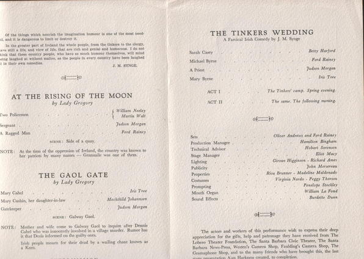

The following is from a eulogy for Alan Harkness, given by Iris Tree:
Alan Harkness had radiance. Anyone who knew him must have felt this quality of light. He was light in his voice and movements in spite of the skinny legs and stomping feet that walked the earth. There was penetrating light in his thought, intentions and councils - and his search for clarity was also his search for form - for pure harmony and true ringing. Nothing murky, devious, soupy or sentimental. He even shocked us by his uncompromising clarities. He combined a strong will and great courage with intense pliability of mind and sensibility of body.
I was often astounded by the stamina of this seemingly frail, etherial being. He had another lovely gift - laughter. He laughed with sympathy, with joy. As a director he was a wonderful audience to act to. A child I know once said of him, 'I like that man with a clown's face.' But he could grieve too, other people's pains afflicted him. He was happiest, I think, when working with those with whom he shared his visions or when revelling in things like streams and trees. 'Art is the revelation of nature's secret laws' he often quoted. He lighted up in the presence of all beautiful things, he had the most delicate and kind way with nature. He was delicate and tactful - even to plants.
The first time I saw him was at Michael Chekhov's theatre studio in England. He was giving a class to the students. They stood around in their blue practice clothing while he told them the theme for an improvisation. It was a fairytale about a dying king who ruled a crumbling kingdom and to whom a young prince was born. The kingdom revived, the workers started building and a sort of a song began. The students instantly piled the structures into a tottering palace and acted with extraordinary imagination and skill. It seemed strange and wonderful to me. Later I became his pupil. I hope I am still.
He was born on July 22nd 1907 in Perth, Australia. His parents were great hearted people who loved and believed in, but did not always understand, their strange delicate son. He went to one of those awful English boy schools that believe in cold baths, cricket, bullying and long sermons on Sunday. The boys persecuted him which made him develop a new cunning and great physical fearlessness. He finally persuaded his parents to send him to an art school in Melbourne. There he won a scholarship and friends among artists who introduced him to the arts. Through his enthusiasm for Gordon Craig's work he became interested in stage design and did sets for a company of players with whom he also started acting. He was fascinated by all the means of expression in theatre: dance, music, design, poetry and always the discovery through art of mans true nature.
He decided to study in Europe the new theatre techniques developed in Russia and France, was disillusioned by the decadence of theatre in England and the dreariness. It was through contact with Michael Chekhov that his hopes and visions revived.
Michael Chekhov is undoubtedly a genius. Alan learnt a great deal from him and through him he learned of the work of Rudolf Steiner whose experiments with speech and movement have opened a new scale for the actor to play in. Alan at first resisted the new approach, later he embraced it. Chekhov made him teacher director. Alan loved not only to direct trained actors but to start new students on the trail. He had a wonderful sympathy for his pupils and real joy in their attempts at creation. 'It can be wonderful' he would say with enormous delight at some improvisation a student sketched, just as he would agonise at a performance which failed its high intent. That's what we liked. We would be stretched to find the perfect outward expression for an inward truth.
When the Chekhov Studio moved from England to Ridgefield Connecticut, Alan moved with it. He acted, taught and directed his own student performances which were so rich in promise and new life. It was a great grief to him when the studio broke up through necessities of war and discouragement in the first Broadway venture. Mostly however it was through human reasons. It is very difficult for people to work together without becoming friends and enemies, without being for and against. Remaining focussed, Alan was never entangled in theatrical strife but we was often the victim of it. Without unity blossoms cannot bear fruit. With his wife Mechthild, Alan must have come closest to this unity. Their 'Great Moments from Shakespeare' gave a beautiful hope of what a close knit company must become through a concentrated and delicate process. It was their performance of Lear that fired some of us to work together. The last agreement was made in Ojai on a cold windy day in a dark theatre that still kept its promise of our first attempts. All around us were scattered the props and pieces of plays, cobwebbed and broken. The many difficulties of the past met us there with its many hopes. We discussed our needs. We re-invoked our intentions. We rehearsed our new plays that were scheduled for today and Alan reiterated over and over again. 'Now is the time to begin!'
Work is never lost. Alan has not left us. The thread between us is vibrant still. I wrote a poem the night before Alan died. I thought of him at the time and intended to read it to him. I dedicate it to him now.
Birds, fish in air and water fleet
Flowers and their mystery of smell and singing words
From every flying, throbbing thing that grows and goes -
This rose, the shadows of the spiders weaving feet
And all the marvels floating through man's eyes
Shaped to his moving hope
And his pursuit of it so wild and far
Beyond the limits of his mortal scope -
This, and the kiss of meeting loves
Devout and passing as the seed and child
Follow with lifting limbs
With fighting, wounding, lifting, seeking hands
And crying hymns -
All, all this night one folded bud it seems
That to the sky breaks open to reveal us -
We are the dreams of God
And when He wakes we die.
Iris Tree
March, 1952
Iris Tree's poem was on the cover of the program for the Memorial Performance at the Lobero Theatre on April 9, 1952. The three Irish plays being presented on this occasion were those being worked on by Alan Harkness when he died.
